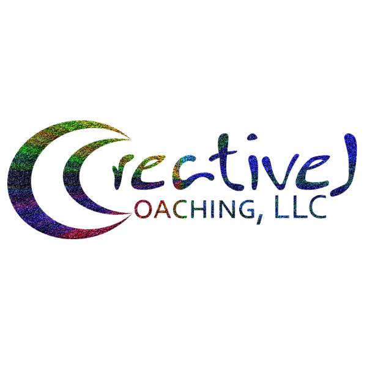

Home
Graduate Work
Master of Arts in Teaching, Multidisciplinary Studies, Webster University
Master of Science in Library & Information Science, University of Illinois at Urbana-Champaign
Master of Science in Educational Psychology and doctoral work, Cognitive Science of Teaching & Learning, University of Illinois at Urbana-Champaign
Master of Fine Arts, Creative Writing, Lindenwood University
Community Management Specialist from Digital Marketer (April 2021)
Direct Response Copywriting Specialist from Digital Marketer (July 2018)
Content Marketing Specialist (October 2019)
Email Marketing Specialist (in progress; from Digital Marketer)
Optimization & Testing Mastery (in progress; from Digital Marketer)
Data & Analytics Mastery (in progress: from Digital Marketer)
Ecommerce Marketing Mastery (in progress: from Digital Marketer)
Professional Educator License, Illinois State Board of Education (expires June 2028)
Software Engineering Immersive (in progress: through General Assembly)
Google Analytics Certification (in progress)
Google Associate Cloud Engineer certification (in progress)